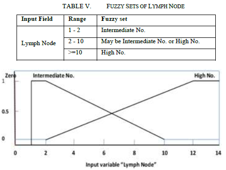

Sobre
Este site discute brevemente sobre variados temas de sistemas fuzzy Inteligentes, ministrada pelo Prof. Dr. Fernando Marar, da Unesp de Bauru.
Os temas apresentados são:
Tratamento de incertezas e imprecisões;
Conjuntos e normas Fuzzy;
Regras de Composição Fuzzy;
Sistemas Baseados em regras Fuzzy;
Fuzzificação e Defuzzificação.
Nosso grupo
Desenvolvedores do projeto

Carolina Junqueira
Developer

Victor Albiero
Developer

Lucas Estevão
Developer

Rhuan Esborini
Developer
Tratamento de incertezas e imprecisões
A lógica clássica, ou aristotélica, é baseada na dualidade do ”verdadeiro ou falso” e leis rígidas para aceitação de conclusões, por exemplo, Terceiro Excluído. Essa lógica é baseada em premissas e conclusões que são alcançadas mediante a completa veracidade ou falsidade das proposições (BOYER, 1996 apud SOUSA, 2005). Com isso, não é possível aplicá-la sobre sistemas em que há proposições parcialmente verdadeiras ou parcialmente falsas. Por exemplo, segundo a lógica aristotélica, seria possível responder: as taças da figura abaixo estão cheias ou vazias?

A resposta para a pergunta anterior é: não dá. Não pela lógica clássica. Há taças que estão ''mais'' cheias que as outras e/ou taças mais vazias que as outras. Pela lógica clássica, estas proposições não poderiam ser feitas, pois não há maneiras para representá-las. Para resolver esta questão, surgiram as lógicas difusas nas quais uma proposição pode ter um valor intermediário entre ''verdadeiro'' e ''falso''. Portanto, as sentenças passam a ter um grau de pertinência a determinado conjunto.
Há limitações quando uma determinada situação possui inúmeras variáveis (SOUSA, 2005). É muito mais fácil expressar por palavras uma situação do que através do modelo lógico bivalente (dualidade). Entretanto, manipular palavras é muito complicado, então é necessário que haja uma maneira de modelar determinados cenários. Segundo Simões e Shaw (2007), o cérebro humano possui a habilidade de manipular conjuntos e números fuzzy. A lógica fuzzy permite representar a percepção da realidade.
A partir de uma lógica difusa é possível fazer o tratamento de incertezas e imprecisões situadas na percepção da realidade. Segundo Yu, Hu e Wu (2007), a fuzzificação é ideal para determinar equivalência de relações, similaridades, domínios e vizinhança de uma relação. Por exemplo, ao observar várias pessoas com alturas próximas não é possível afirmar qual é ”mais alta” e qual a ”mais baixa”. Portanto, mede-se todas as pessoas e, encontrando os limites (mais alta e mais baixo), qualifica-se as outras pessoas de acordo com o valor de sua altura. Para ilustrar esse exemplo, observe a figura abaixo.

Resumindo, na lógica difusa, as senteças possuem grau de pertinência, podem assumir valor entre 0 e 1, ou seja, as respostas tem grau de veracidade. Os quantificadores podem ser: "a maioria", "muitos", "poucos", "parcialmente", entre outros. Segundo o exemplo visto, tratou-se da incerteza e da imprecisão que a lógica clássica não trata e não pode expressar. A lógica fuzzy é um exemplo de lógica difusa.
Lógica Fuzzy
Princípios
A lógica fuzzy é um exemplo de lógica difusa, ou nebulosa, que admite que proposições assumam valores entre 0 e 1. Uma proposição é totalmente verdadeira se possui valor 1, e é totalmente falsa se possui valor 0. Os valores de verdade são expressos linguisticamente (ex: parcialmente verdadeiro, muito verdadeiro, pouco falso, etc.). Já os predicados são nebulosos, por exemplo: alto, baixo, muito baixo, médio, entre outros.
Esse tipo de lógica admite diferentes tipos de quantificadores em relação à lógica clássica. Alguns exemplos são: pouco, muitos, vários, em torno de, frequentemente, etc. Já quanto a probabilidade, na lógica clássica ela é expressa com um valor numérico, enquanto na lógica fuzzy há uma ampla variedadede palavras para expressá-la, por exemplo: provável, altamente provável, improvável, etc.
De modo geral, a lógica fuzzy trata de informações qualitativas de forma rigorosa (GOMIDE; GUDWIN; TANSCHEIT, 2015). Isso ocorre para tratar imprecisões e incertezas e manipular o conhecimento. Uma decorrência disso é que essa lógica é amplamente aplicada em sistemas de tempo real, como a área de Internet das Coisas (IoT), pois simplifica o modo de manipular e manter o controle das entrada e saídas, diminuindo a complexidade de alguns tipos de sistemas.
Imagem de um elemento e grau de pertinência
Se imagem de um elemento é igual a 0, o elemento definitivamente não está em um conjunto fuzzy. Se a imagem for 1, o elemento está definitivamente no conjunto. Se for um valor entre 1 e 0, será o grau de pertinência do elemento no conjunto.
Conjuntos fuzzy
Esta lógica trata da noção de conjunto de um modo diferente. Enquanto, na matemá- tica a ideia de conjunto é voltada para elementos que possuem características específicas em comum, na lógica fuzzy, isso é generalizado. Além de incluir os extremos 0,1, os conjuntos incluem outros valores entre [0,1]. Desta forma, essa lógica possui mais aplicabilidades (SOUSA, 2005).
A teoria fuzzy permite que um elemento esteja parcialmente contido num conjunto. Um conjunto fuzzy A, onde A é um subconjunto do universo U, deve ser descrito como um conjunto de pares ordenados, onde o primeiro termo é o próprio elemento (x), e o segundo termo é o grau de pertinência (µ(x)).
Um conjunto fuzzy pode ser considerado uma classe cujos limites não são claramente definidos. Eles são chamados de difusos ou nebulosos. Na figura abaixo, há um exemplo do conjunto A, quanto mais próximo do centro, maior o grau de pertinência. Na parte de fora, o grau de pertinência é nulo.

Função de pertinência
É possível representar um conjunto fuzzy a partir das relação entre cada valor e seu grau de pertinência. Essas funções representam uma curva que assume valores entre 0 e 1.
Uma função de pertinência não é única, ela é construída de acordo como se quer avaliar determinado cenário. Pode-se determinar uma função que mais convém. Em consequência, há diferentes representações gráficas para a mesma função de pertinência. Portanto, uma função de pertinência é definida de acordo com o termo subjetivo do problema em questão.
Universo de discurso
Todo conjunto fuzzy é um subconjunto de um Universo de Discurso. Esse universo é um conjunto de valores finitos que contém todos os valores possíveis de estarem contidos em seus subconjuntos fuzzyVariáveis Linguísticas
Uma variável linguística é um conjunto de termos linguísticos, que são nomes ou rótulos representados por conjuntos fuzzy. Ela é usada como símbolo mais adequado à formulação de proposições.
Uma váriavel desse tipo se apresenta como uma palavra e/ou expressão em linguagem natural ou artificial. Ela composta de uma quintupla (x, T(x), U, G, M(x)), onde:
- x é o nome da variável;
- T(x) é o conjunto dos nomes dos valores linguísticos de x, sendo cada um desses um conjunto dentro de U;
- U é o Universo de Discurso;
- G representa a regra sintática que gera os nomes que compõe a variável;
- M(x) é a função de pertinência que representa o termo linguístico x.
Números fuzzy
Números fuzzy e conjuntos fuzzy podem ter o mesmo significado. Eles também possuem relação de pertinência. Segundo Sousa (2005): "um número fuzzy N pode ser expresso como N = (α, c), onde é o Número Real que coincide com o valor central de N. A constante c é a distância entre α e os pontos da Reta dos Números Reais que possuem possibilidade nula mais próximos de α".
A seguir, alguns tipos de números fuzzy, seguidos de suas funções genéricas de pertinência, um exemplo aplicado e gráfico.

Conectivos lógicos
A lógica fuzzy utiliza os mesmos conectivos lógicos e notações que a lógica clássica. Nas figuras a seguir pode-se observar como é o funcionamento de cada um deles na teoria fuzzy.


Regras de inferência
Para concluir qualquer coisa a partir de uma proposição e uma base de regras é necessário um mecanismo que produza uma saída a partir de uma coleção de regras do tipo "se-então". Há alguns tipos de inferência como Modus Ponens. O funcionamento de algumas regras serão ilustradas através dos exemplos práticos.
Controlador fuzzy
A lógica difusa procura mapear variáveis numéricas para variáveis linguísticas, ou seja, atribuir números à palavras (quente, muito longe, perto, frio, etc.). Segundo (GOMIDE; GUDWIN; TANSCHEIT, 2015),"a idéia básica em controle fuzzy é modelar as ações a partir de conhecimento especialista, ao invés de, necessariamente, modelar o processo em si".
Um controlador fuzzy consiste num conjunto de sentenças linguísticas ou regras, as quais definem ações individuais. Ele é indicado para resolver problemas que exijam capacidade do controlador se adaptar a mudanças. A configuração do sistema está na figura na seguir.
Fuzzificação
A fuzzificação consiste nas seguintes funções: toma os valores numéricos das variáveis de entrada; faz um mapeamento para condicionar os valores de entrada a universos normalizados; defini as funções de permanência e converte os valores em conjuntos fuzzy.
Base do conhecimento
A base de dados é formada pelas definições dos conjuntos fuzzy que descrevem os predicados de cada variável de entrada e de saída com suas respectivas funções de pertinência as quais podem ser discretas ou contínuas.
Máquina de inferência
É o núcleo do controlador fuzzy. Ele infere ações de controle empregando implica- ções fuzzy e as regras de inferência da lógica fuzzy. Além disso, simula tomada de decisões baeadas nos conceitos fuzzy.
Deffuzificação
Efetua um levantamento, no qual compatibiliza os valores normalizados das variáveis de saída com os valores dos unviversos de discurso reais das variáveis. Além disso, transforma as ações de controle fuzzy inferidas em ações de controle não-fuzzy.
Sistema Exemplo
Para ilustrar o exemplo de um sistema fuzzy, o trabalho de Saleh, Barakat e Awad (2011) foi explorado segundo os tópicos a seguir.
Método de inferência
O método de inferência fuzzy de Mamdani é a metodologia fuzzy mais usada comumente. O método de Mamdani foi um dos primeiros sistemas de controle construídos usando a teoria de conjuntos fuzzy e foi proposto em 1975 por Ebrahim Mamdani como uma tentativa de controlar uma combinação de máquina a vapor e caldeira, sintetizando um conjunto de regras de controle linguístico obtidas de operadores humanos experientes. O esforço de Mamdani foi baseado no trabalho de Lotfi Zadeh de 1973 sobre algoritmos fuzzy para sistemas complexos e processos de decisão. O sistema utilizado como exemplo utiliza esse método de inferência aplicado ao toolbox da lógica fuzzy MATLAB R2009b.
Design do sistema
Quando o problema tem um comportamento dinâmico, a lógica fuzzy é ideal. O primeiro passo de um sistema fuzzy de suporte a decisão é determinar as variáveis deentrada e saída. O sistema em questão possui seis variáveis de entrada.
HER2
Human Epidermal Growth Factor Receptor 2 é uma proteína que causa maior agressividade às células cancerígenas. Essa variável de entrada tem dois estados fuzzy: “Negativo” e “Positivo”, os quais suas funções de pertinência são trapézios que estão na figura abaixo.
Hormônios receptores
Os hormônios receptores identificam a sensibilidade da mama ao hormônio. A variável de entrada tem quatro estados fuzzy, que são: Negativo, Fracamente Positivo, Moderadamente Positivo e Fortemente Positivo. As funções de pertinência dos estados de Negativo e Fortemente Positivo são trapezoidais e as funções de pertinência dos estados de Fracamente Positivo e Moderadamente Positivo são triangulares, como pode ser visto na fiura a seguir.
Idade de Risco
Essa entrada tem três estados fuzzy: Muito Alta, Alta e Baixa. As funções de pertinência são trapézios que são apresentados na figura a seguir.
Grau do tumor
Uma descrição do tumor baseado no quão anormais as células cancerígenas parecem olhando pelo microscópio e quão rápido o tumor parece crescer e se espalhar. A variável de entrada tem três estados fuzzy: Grau1, Grau2 e Grau3 e as funções de pertinência para esses estados são trapézios, como mostra a figura abaixo.
Linfonodos
Um linfonodo faz parte do sistema linfático do corpo. No sistema linfático, uma rede de veias linfáticas carregam fluidos chamados linfas. As veias linfáticas levam aos linfonodos onde as células cancerígenas tendem a se espalhar a partir do tumor primário. A variável de entrada é zero ou tem dois estados fuzzy: Número Intermediário ou Número Elevado, os quais possuem trapézios como funções de pertinência que podem ser visualizados na figura a seguir.
Tamanho do tumor
Essa variável de entrada tem dois estados fuzzy: Tamanho Pequeno e Tamanho Intermediário, os quais possuem trapézios como funções de pertinência que estão na figura a seguir.
Estado de risco
O objetivo do sistema é identificar o estado de risco do câncer de mama ter uma recaída ou ter um diagnóstico antecipado de mortalidade. A variável de saída é um valor entre 1 e 4, representando os estados de Risco Baixo, Risco Intermediário e Alto Risco. Quanto maior o valor, o risco do tumor aumenta. As funções de pertinência da variável de saída são triângulos que podem ser observados na figura abaixo.
Testes e resultados
A figura a seguir ilustra um teste do sistema com valores de entrada para HER2, Hormônios Receptores, Idade de Risco, Linfonodos, Tamanho do Tumor e Grau do Tumor, além de um valor de saída Estado de Risco.
Aplicações
A lógica fuzzy não tem uma área específica da ciência para ser aplicada, há projetos desde a área da medicina até gestão de pessoas, por exemplo. Este capítulo tem como objetivo ilustrar algumas áreas de aplicação da lógica fuzzy, no que ela está sendo usada atualmente.
Gestão urbana - 2015
O trabalho "Assessment of ultrafine particles and noise measurements using fuzzy logic and data mining techniques" (FERNÁNDEZ-CAMACHO et al., 2015) baseia-se em no número total da concetração de emissões de tráfego rodoviário e os níveis de poluição em uma área urbana do sudoeste da Espanha. Pretende-se ligar as emissões do tráfego como a principal fonte de poluição nas áreas urbanas. O sistema baseia-se em data mining e fuzzy.
Recursos hídricos - 2015
O trabalho ”Improving the performance of water balance equation using fuzzy logic approach” (KHAZAEI; HOSSEINI, 2015) tem como principal objetivo aplicar um conjunto de coeficientes fuzzy aos componentes da equação do balanço hídrico, a fim de reduzir o erro da equação. Esse erro decorre da dificuldade na estimação precisa de seus componentes individuais. Os coeficientes fuzzy refletem a incerteza e imprecisão na avaliação de cada componente e minimizam o erro geral da equação do balanço hídrico. Estes coeficientes são ajustados por um procedimento de minimização baseado em conceitos de regressão fuzzy e utilizando dados registrados disponíveis para uma determinada área de estudo dentro de uma escala de tempo especificada. O ajuste dos coeficientes pode efetivamente estimar o balanço dos componentes da água no futuro. Portanto, esse sistema auxiliaria na gestão dos recursos hídricos de uma comunidade.
Distribuição de perigos e recursos - 2017
O trabalho ”A spatial fuzzy logic approach to urban multi-hazard impact assessment in Concepción, Chile” (ARAYA-MUñOZ et al., 2017) utiliza uma metodologia baseada em fuzzy para explorar o impacto de riscos relacionados com o clima, incluindo inundações costeiras e fluviais, escassez de água, estresse por calor e incêndios. A modelagem através da lógica difusa permitiu alta flexibilidade na padronização e agregação de indicadores com características diversas, além de fornecer um meio para explorar como a interação de vários indicadores influenciou o índice. Os mapas resultantes podem ajudar a identificar indicadores, componentes e perigos ou combinações de perigos que mais influenciam o impacto nos municípios. Os resultados podem ser utilizados para melhorar e promover o diálogo entre os decisores políticos e as partes interessadas sobre a priorização dos recursos para o desenvolvimento urbano de formas que também podem reduzir a exposição e sensibilidade e menor vulnerabilidade às alterações climáticas.
Gestão de talento - 2014
O trabalho ”Talent management in manufacturing system using fuzzy logic approach” (KARATOP; KUBAT; UYGUN, 2014) tem como objetivo propor um modelo para investigar o nível de competência dos funcionários e utilizar essa informação na obtenção de um rendimento em nível ótimo, a partir das capacidades e experiências emocionais e intelectuais dos colaboradores. O nível de percepção e habilidade de trabalho de cada empregado é diferente. Os testes implementados em empresas para fins de TM são geralmente avaliados em lógica nítida como preto e branco. Neste estudo, foi proposta uma abordagem de lógica fuzzy para lidar com a incerteza e a imprecisão na avaliação da TM.
Definição de perfis - 2015
O trabalho ”Stakeholder profile definition and salience measurement with fuzzy logic and visual analytics applied to corporate social responsibility case study” (POPLAWSKA et al., 2015) tem como objetivo propor uma nova estrutura baseada na lógica fuzzy e na análise visual, que é capaz de avaliar com precisão a importância das partes interessadas (stakeholders) indicando o grau exato de adesão a um determinado grupo de interesse. Como um estudo de caso ilustrativo, este quadro tem sido aplicado para construir e visualizar o perfil das principais partes interessadas do setor extrativo e medir a sua relevância num contexto de responsabilidade social corporativa.
Mensurar distorção - 2006
O trabalho ”A Time-Varying Harmonic Distortion Diagnostic Methodology Using Fuzzy Logic” (KLINGENBERG, 2006) propõe a utilização da lógica fuzzy para analisar, comparar, e diagnosticar índices de distorção harmônicos em um sistema de energia.
Controle de Tráfego - 2005
O trabalho ”Aplicação de lógica fuzzy em sistemas de controle de tráfego metropolitano em rodovias dotadas de faixas exclusivas para ônibus” (SOUSA, 2005) tem como objetivo fazer a gestão do tráfego de linhas exclusivas para o transporte público visando a otimização da utilização das rodovias. Portanto, nele é proposto através da teoria fuzzy controlar o tráfego metropolitano através de um controlador do uso de vias.
Conclusão
A lógica difusa ou fuzzy foi proposta principalmente para acomodar as percepções de realidade que observávamos, mas não podíamos expressar através da lógica clássica. O modo de modelar situações e cenários através de funções matemáticas e variáveis linguísticas enriqueceu o meio de representar e construir aplicações.
Com um nível de abstração maior, utilizar a lógica fuzzy é flexível, pois é quase igual ao modo de pensar do ser humano. Além disso, diminui-se a complexidade de construir sistemas, pois as estruturas são mais completas.
Observou-se que as primeiras pesquisas da lógica fuzzy estavam relacionadas com a otimização de cálculos existentes, tanto que na história fuzzy ela começou a ser moldada sobre princípios de lógica já existentes a fim de complementá-los ou refutá-los. Um exemplo é utilizar a teoria fuzzy para exprimir erros em equações, ou seja, descobrir qual é o erro para depois minimizá-lo.
Além da aplicação em equações, um dos principais motivos para o uso da lógica fuzzy é manipular uma informação qualitativa. Com o amadurecimento da Big Data e do data mining as empresas e pesquisadores procuram formas de extrair algum significado de milhões de dados para aplicar em sistema de decisão, previsão, sugestão, automatização, entre outros.
Observou-se durante as pesquisas bibliográficas uma gama de áreas que a lógica fuzzy pode ser aplicada, em destaque se revelaram: planejamento urbano, planejamento de recursos, definição de perfis, ajustes em equações e análise de situações climáticas. Algumas aplicações, como a apresentada no tema Sistema Exemplo, revelam tendências na área médica, principalmente, na definição do perfil de doenças e prevenção quanto à análise de fatores de risco. Também há o investimento de clubes esportivos na inteligência do esporte através da lógica fuzzy para estabelecer o desempenho de atletas e analisar possíveis contratações.